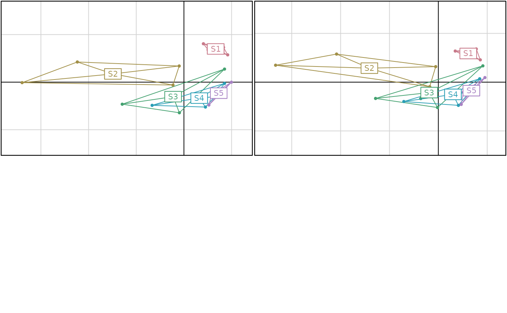

Leave-one-out cross-validation for a bca
loocv.bca.RdLeave-one-out cross-validation for bca.
Arguments
- x
dudi of the
bcaon which cross-validation should be done- nax
list of axes for mean overlap index computation (0 = all axes)
- progress
logical, TRUE = display a progress bar during computations
- parallel
logical, TRUE = process cross-validation in parallel computing
- xax, yax
the numbers of the x-axis and the y-axis
- ...
further arguments passed to or from other methods
Details
This function returns a list containing the cross-validated coordinates of the rows (the rows of the original analysis, not the rows of the bca). The dudi on which the bca was computed is redone after removing each row of the data table, one at a time. A bca is done on this new dudi and the coordinates of the missing row are computed by projection as supplementary element in the corresponding bca. This is most useful in the case p >> n (many variables and few samples), where bca graphs can show spurious groups (see Refs.)
For parallel computing (parallel argument = TRUE), the new dudi, bca and cross-validation computations are processed in parallel on all the available nodes of the computer processor(s).
Value
A list with:- XValCoord:
the cross-validated row coordinates - PRESS:
the Predicted Residual Error Sum for each row- PRESSTot:
the sum of PRESS for each bca axis - Oij_bga:
the mean overlap index for BGA- Oij_XVal:
the mean overlap index for cross-validation- DeltaOij:
the spuriousness index
References
Thioulouse J, Renaud S, Dufour AB, Dray S. Overcoming the Spurious Groups Problem in Between-Group PCA. Evolutionary Biology (2021). (Accepted).
Cardini A, Polly D. Cross-validated Between Group PCA Scatterplots: A Solution to Spurious Group Separation ? Evolutionary Biology (2020) 47:85–95. doi:10.1007/s11692-020-09494-x
Cardini A, O'Higgins P, Rohlf J. Seeing Distinct Groups Where There are None: Spurious Patterns from Between-Group PCA. Evolutionary Biology (2019) 46:303-316. doi:10.1007/s11692-019-09487-5
Bookstein F. Pathologies of Between-Groups Principal Components Analysis in Geometric Morphometrics. Evolutionary Biology (2019) 46:271-302. doi:10.1007/s11692-019-09484-8
Examples
# Data = meaudret
data(meaudret)
pca1 <- dudi.pca(meaudret$env, scannf = FALSE, nf = 3)
bca1 <- bca(pca1, meaudret$design$site, scannf = FALSE, nf = 3)
pst1 <- paste0("Meaudret BGA randtest: p=",
randtest(bca1)$pvalue, " ratio=", round(bca1$ratio, 2))
xbca1 <- loocv(bca1, progress = TRUE)
if(adegraphicsLoaded()){
sc1 <- s.class(bca1$ls, meaudret$design$site, col = TRUE,
psub.text = pst1, ellipseSize=0, chullSize=1, plot = FALSE)
sc2 <- s.class(xbca1$XValCoord, meaudret$design$site,
col = TRUE, psub.text = "Meaudret cross-validation",
ellipseSize=0, chullSize=1, plot = FALSE)
ADEgS(list(sc1, sc2))
} else {
par(mfrow=c(2,2))
s.chull(dfxy = bca1$ls, fac = meaudret$design$site, cpoint = 1,
col = hcl.colors(5, "Dark 2"), sub = pst1)
s.class(bca1$ls, meaudret$design$site, col = hcl.colors(5, "Dark 2"),
cellipse = 0, add.plot = TRUE)
s.chull(dfxy = xbca1$XValCoord, fac = meaudret$design$site, cpoint = 1,
col = hcl.colors(5, "Dark 2"), sub = "Meaudret cross-validation")
s.class(xbca1$XValCoord, meaudret$design$site, col = hcl.colors(5, "Dark 2"),
cellipse = 0, add.plot = TRUE)
}
if (FALSE) {
# Data = rnorm()
set.seed(9)
fac1 <- as.factor(rep(1:3, each = 10))
tab <- as.data.frame(matrix(rnorm(10800), nrow = 30))
pca2 <- dudi.pca(tab, scannf = FALSE)
bca2 <- bca(pca2, fac1, scannf = FALSE)
pst2 <- paste0("rnorm spurious groups: p=",
randtest(bca2)$pvalue, " ratio=", round(bca2$ratio, 2))
xbca2 <- loocv(bca2, progress = TRUE)
if(adegraphicsLoaded()){
sc3 <- s.class(bca2$ls, fac1, col = TRUE,
psub.text = pst2, ellipseSize=0, chullSize=1,
xlim = c(-8, 8), ylim = c(-8, 8), plot = FALSE)
sc4 <- s.class(xbca2$XValCoord, fac1, col = TRUE,
psub.text = "rnorm cross-validation", ellipseSize=0,
chullSize=1, xlim = c(-8, 8), ylim = c(-8, 8), plot = FALSE)
ADEgS(list(sc3, sc4))
} else {
par(mfrow=c(2,2))
s.chull(bca2$ls, fac1, optchull = 1, cpoint = 1, xlim = c(-8, 8), ylim = c(-8, 8),
col = hcl.colors(3, "Dark 2"), sub = pst2)
s.class(bca2$ls, fac1, xlim = c(-8, 8), ylim = c(-8, 8),
col = hcl.colors(3, "Dark 2"), cellipse = 0, add.plot = TRUE)
s.chull(xbca2$XValCoord, fac1, optchull = 1, cpoint = 1, xlim = c(-8, 8),
ylim = c(-8, 8), col = hcl.colors(3, "Dark 2"), sub = "rnorm cross-validation")
s.class(xbca2$XValCoord, fac1, xlim = c(-8, 8), ylim = c(-8, 8),
col = hcl.colors(3, "Dark 2"), cellipse = 0, add.plot = TRUE)
}
}
